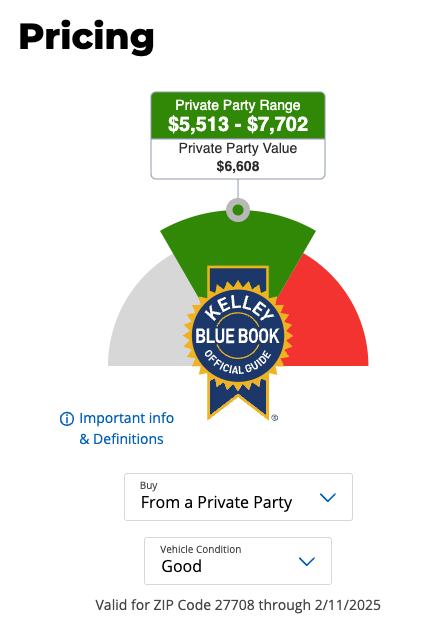

Kelly Blue Book Buyer#
Hello!
You’re a data scientist with Kelly Blue Book, a US company that collects and reports data on car sales. You used to publish a literal blue book with average selling prices for all makes and models of cars — new and used — across the US. This book was considered the gold standard for what constituted a “fair” price for a car, so much so that people discussing car prices talk about cars being “above blue book” (too expensive) or “below blue book” (a great deal!).
Recently, Kelly Blue Book has been thinking that given all this data it might be a good idea to not just tell people about car prices, but to use their data and models to make a little money themselves.
How Kelly Blue Book Estimates Prices#
Kelly Blue Book collects records of all used car sales and reports the range of prices cars for which cars are actually sold based on:
Make (e.g., Toyota, Ford)
Model (e.g., Camry, F150)
Trim (the specific options the car came with, like “Limited” or “SE”)
Model Year
Mileage on the car (how far it’s been driven in its life)
Condition, divided into Excellent, Very Good, Good, and Fair. You can see these categories detailed here.
Condition is obviously one of the trickier categories, but Kelly Blue Book has a pretty good questionnaire that asks about things like odor, maintenance records, paint chips, etc.
In fact, why don’t you go fill it out to get a feel for things! Answer for a real car if you have one or your family recently had one, or just make it up if not.
Making Money#
Kelly Blue Book’s idea is to use their model and data to make guaranteed offers to people who come to their website to check the value of a car they’re thinking of selling.
The idea is that people may take a slightly lower price than normal to avoid all the annoyances of selling a car through normal channels. If you try to sell your car to a dealer, you have to go to the dealership, negotiate and deal with high-pressure sales people trying to get you buy one of their cars, and be mindful of weird sales tricks. If you sell it yourself, you have to deal with scheduling test drives with interested buyers, making sure that your insurance will let potential buyers test drive the car, you have to avoid scammers, etc.
So why not offer a cash price that’s a little below market value, then re-sell the car through the kind of dealer auction that you have access to but consumers don’t.
Today’s Exercise#
In front of you are two people interested in selling their 2012 Toyota Camrys. Both have 85,000 miles, are the same trim (SE Sedan 4D), and the questionnaire determines they are both in “Good” condition. Your model predicts that, if they sold the cars themselves, they could expect to make between $5,500 and $7,700.

So, based on that prediction, please make the sellers in front of you an offer (the offer should be the same for the two buyers since the answers they gave on the questionnaire were the same).
Bear in mind you’ll need to re-sell the car, so don’t pay too much — if you were to pay these sellers $7,700, then even if you re-sold the car for that top value of $7,700, you’d lose money paying taxes and transportation costs. So make sure you give yourself some margin.